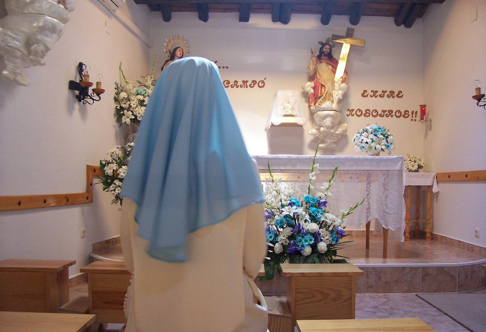

La llamada al claustro no es una huida, sino una inmersión profunda en el Corazón de Dios por el mundo.
La vocación contemplativa es un misterio de amor. Dios elige a algunas almas para que, separadas del mundo materialmente, estén presentes en el corazón mismo del mundo espiritualmente, sosteniéndolo con su oración silenciosa y su entrega total.
Si sientes una inquietud, una sed que nada en el mundo logra saciar, o un deseo de entregarte a Dios sin reservas, es posible que el Señor te esté llamando a una vida de mayor intimidad con Él.
Las almas contemplativas son verdaderas columnas de apoyo de la Iglesia; sin ellas la actividad de la Iglesia carecería de fecundidad y fuerza interior.
Constitución Apostólica Vultum Dei Quaerere
El discernimiento vocacional es un proceso. No tienes que tenerlo todo claro desde el principio. Solo se requiere sinceridad de corazón, amor a Dios y disposición para escuchar Su voluntad.
Si deseas conocernos, hacer alguna pregunta, o simplemente necesitas que recemos por tu proceso de discernimiento, puedes escribirnos a través de este formulario confidencial. Te responderemos con cariño y sin ningún compromiso.